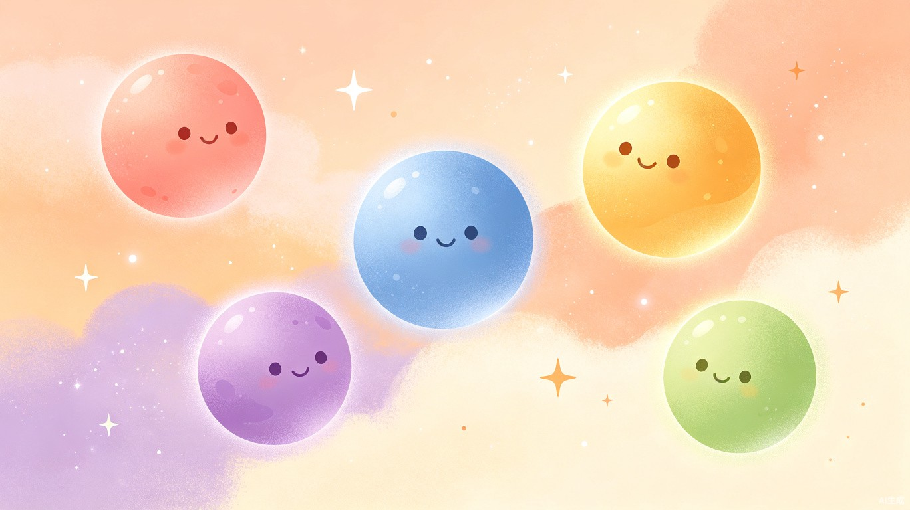
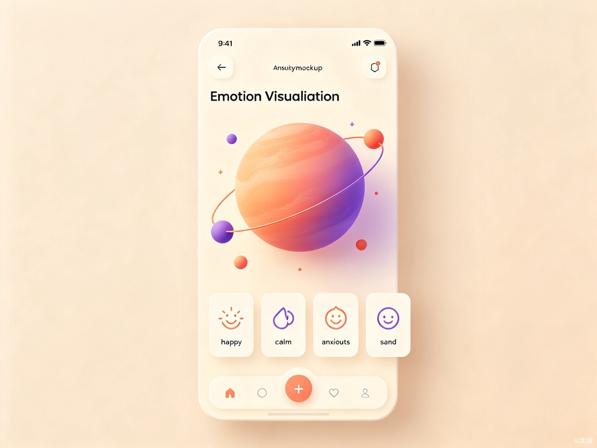
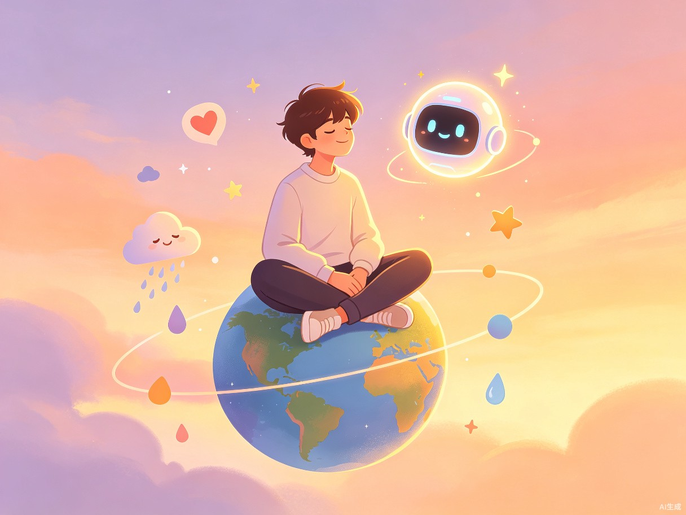

让每一颗年轻的心，
都能找到自己的轨道。
情绪星球是一款面向 12-18 岁青少年的 AI 情绪健康管理应用。它将青少年的情绪世界比喻为一片宇宙——每一种情绪都是一颗独特的星球：快乐是温暖的恒星，焦虑是卷起风暴的红色行星，平静是柔和的蓝色卫星。通过 AI 情绪识别、对话陪伴和循证心理工具，帮助青少年看见、理解并接纳自己的情绪，在情绪风暴来临时找到锚点。
在传统心理健康服务资源紧缺、求助门槛高、病耻感强烈的现实下，情绪星球用一种低门槛、去标签化的方式，把情绪管理的入口放在每个青少年的口袋里。它不是替代专业心理咨询，而是在"还没严重到需要看医生"和"已经需要专业介入"之间，填补那片巨大的空白。
《2025 中国青少年心理健康蓝皮书》显示，我国青少年抑郁检出率高达 24.6%，其中重度抑郁占比 7.4%[1]。这意味着每四个青少年中，就有一个正在经历抑郁困扰。更广泛的心理健康问题检出率达到 30.4%，抑郁、焦虑等情绪障碍尤为突出[2]。
在抑郁青少年群体中，43.9% 同时伴有焦虑障碍，39.2% 存在睡眠障碍，20.9% 共病强迫症[1]。情绪问题很少单独出现，它们往往相互交织，形成让青少年难以独自挣脱的漩涡。
当前青少年心理健康支持体系存在明显的结构性缺口。专业心理咨询师与青少年人数比例严重失衡，一线心理咨询资源集中在城市和大型医院，县域和农村几乎空白。即便在资源相对充足的城市，单次心理咨询费用在 300-800 元之间，对普通家庭构成持续经济压力。
更深层的问题在于求助门槛。青少年对"心理问题"标签高度敏感，主动走进咨询室意味着承认"自己有病"，这种病耻感让大量处于亚临床状态的青少年选择沉默。而学校心理普查往往以筛查诊断为导向，缺乏日常化的情绪觉察与自助工具，无法在问题恶化前提供早期介入。教育部虽明确鼓励利用人工智能等技术赋能学生心理健康工作[3]，但落地产品仍然稀缺。
情绪星球瞄准的，正是这片"不够严重到看医生，却已足够痛苦"的灰色地带——一个目前几乎无人覆盖的巨大需求空间。
情绪星球的产品设计遵循一个核心原则：把心理学中经过验证的情绪管理方法（认知行为疗法 CBT、正念减压 MBSR、接纳承诺疗法 ACT），包装成青少年愿意打开、愿意停留、愿意回来的交互体验。技术不是炫技，而是让循证心理学以更低的门槛触达更多人。
用 3D 可视化呈现青少年的情绪宇宙。每种情绪是一颗有独特色彩、纹理和轨道的星球，打卡数据驱动星球的大小与轨道变化，让抽象情绪变得可触可感。
30 秒完成的轻量打卡：选择情绪星球、标注触发事件、记录身体感受。游戏化设计降低记录门槛，连续打卡解锁星球皮肤，建立情绪觉察习惯。
基于大语言模型的对话陪伴，运用共情回应、认知重构和苏格拉底式提问技术，在对话中帮助青少年梳理情绪、识别非理性信念，而非简单给出建议。
内置循证心理工具：4-7-8 呼吸法、五感着陆练习、情绪日记、认知重构工作表。按情绪状态智能推荐，焦虑时推着陆练习，低落时推行为激活。
时间轴与趋势分析，帮助青少年看见情绪的周期性规律——考试季焦虑升高、社交冲突后低落加深。看见规律本身就是一种疗愈，也帮助提前应对。
危机检测与干预通道。当 AI 识别到自伤、自杀风险信号时，触发分级响应：温和引导专业求助、推送 24 小时心理援助热线、在获得授权后通知监护人。

小星成绩中等偏上，但每次月考前一周开始失眠、胃痛。她不会告诉父母——说了只会得到"别想太多，好好学"。她也不想去学校咨询室——"被同学看到怎么办"。但她会在深夜打开手机，在一个没有评判的地方，写下自己今天的感受。
小辰和好朋友闹翻了，已经两周没说话。他知道自己"心情不好"，但说不清具体是什么情绪，更不知道该怎么处理。他需要一个工具帮他命名情绪、理解发生了什么，然后告诉他下一步可以做什么。
睡前 5 分钟：完成情绪打卡，看看今天的星球变成了什么颜色，和 AI 伙伴聊两句当天的感受，带着被听见的感觉入睡。
考前焦虑时：打开情绪工具箱，跟着 4-7-8 呼吸法做三轮练习，心率从 95 降到 72，重新坐回书桌前。
和朋友吵架后：和 AI 伙伴对话，通过苏格拉底式提问发现自己"她一定是讨厌我了"的自动思维，尝试用更平衡的视角重新看待这件事。
情绪持续低落两周：情绪轨迹发出提醒——"最近两周你的低落星球持续变大，可能需要更多支持"，并温和地引导查看专业资源。
情绪星球采用前后端一体化的 Next.js 架构，确保 SSR 渲染性能和 SEO 友好性，同时通过 API Routes 承载 AI 对话和情绪分析逻辑。3D 星球可视化基于 React Three Fiber，情绪数据通过 IndexedDB 本地加密存储，保障青少年隐私。
flowchart TB
subgraph Client["前端 · Next.js + React"]
UI[情绪星球界面]
Planet3D[3D 星球可视化
React Three Fiber]
Chat[AI 对话窗口]
Toolkit[情绪工具箱]
end
subgraph API["后端 · Next.js API Routes"]
EmotionAPI[情绪分析服务]
CompanionAPI[AI 伙伴引擎]
CrisisAPI[危机检测服务]
DataAPI[数据存储服务]
end
subgraph AI["AI 能力层"]
LLM[大语言模型
共情对话 + 认知重构]
NLP[情绪 NLP 分析
文本情感识别]
Risk[风险评估模型
自伤信号检测]
end
subgraph Data["数据层"]
Local[(IndexedDB
本地加密存储)]
Cloud[(云端数据库
脱敏聚合数据)]
end
UI --> EmotionAPI
Planet3D --> DataAPI
Chat --> CompanionAPI
Toolkit --> EmotionAPI
EmotionAPI --> NLP
CompanionAPI --> LLM
CrisisAPI --> Risk
DataAPI --> Local
DataAPI --> Cloud
Risk -->|触发| CrisisAPI
CrisisAPI -->|响应| UI
| 层级 | 技术方案 | 选择理由 |
|---|---|---|
| 前端框架 | Next.js 14 + React 18 + TypeScript | SSR 性能优秀，API Routes 内置后端能力，部署简单 |
| 样式方案 | Tailwind CSS + Framer Motion | 原子化样式保证一致性，动画增强星球沉浸感 |
| 3D 可视化 | React Three Fiber + Three.js | 声明式 3D 开发，与 React 生态无缝集成 |
| AI 对话 | LLM API + Prompt Engineering | 共情对话、认知重构、苏格拉底提问通过 Prompt 编排 |
| 情绪分析 | NLP 情感分析模型 | 从文本打卡中提取情绪标签与强度，驱动星球变化 |
| 数据存储 | IndexedDB 本地加密 + 云端脱敏聚合 | 隐私优先：原始情绪数据留在本地，仅匿名聚合上传 |
| 测试方案 | Jest + React Testing Library + Playwright | 单元测试覆盖核心逻辑，端到端测试验证交互流程 |
| 部署方案 | Vercel 边缘部署 | 全球 CDN 加速，自动 CI/CD，零配置部署 |

情绪星球的 AI 能力设计有一个核心信念：技术的价值不在于给出正确答案，而在于让青少年感到被听见、被理解。一个 15 岁的孩子在深夜写下"我觉得自己什么都做不好"，他需要的不是一句"你要自信"，而是一个"我听到了你的沮丧，愿意多说说今天发生了什么吗"。
情绪识别层：通过 NLP 情感分析模型，从青少年的文字打卡和对话中提取情绪标签（快乐、悲伤、焦虑、愤怒、恐惧、 disgust、平静）及强度值（1-10），驱动情绪星球的视觉变化。这一层让看不见的情绪变得可视化。
对话陪伴层：基于大语言模型，通过精心设计的 Prompt 编排实现共情回应、情绪命名、认知重构和苏格拉底式提问。对话策略参考 CBT 的自动思维记录技术——不直接否定青少年的负面想法，而是通过提问引导其自己发现思维中的认知扭曲。
风险检测层：独立的危机检测服务持续监测对话和打卡中的风险信号（自伤意念、自杀计划、绝望表达）。一旦触发阈值，系统分级响应：轻度推自助工具、中度引导专业求助、重度直接弹出 24 小时心理援助热线。这一层的优先级高于一切。
AI 伙伴的对话边界被严格设定：它不做诊断、不开处方、不替代人类咨询师。当对话超出自助范围时，它会明确告知并引导寻求专业帮助。这不是技术能力的局限，而是伦理的自觉。
情绪星球的社会价值不在于技术多复杂，而在于它降低了什么。它降低了情绪觉察的门槛——一个 30 秒的打卡比写一篇日记容易得多；它降低了求助的心理门槛——和一个 AI 聊天比走进咨询室轻松得多；它降低了专业介入的发现门槛——风险检测让沉默的求救不再被错过。
建立日常情绪觉察习惯，在问题恶化前获得自助工具。当情绪风暴来临，有一个随时可用的锚点。当风暴超出自己能承受的范围，有一条清晰的通往专业帮助的路径。
为家长和教师提供匿名化的群体情绪趋势，帮助识别班级层面的情绪波动。为学校心理咨询师提供早期预警信号，让有限的咨询资源精准触达最需要的学生。
所有核心功能对青少年永久免费。这是公益赛道产品的底线：不能因为一个 15 岁孩子付不起钱，就让他在情绪漩涡里多沉溺一天。
一个公益产品如果只靠情怀维持，终将不可持续。情绪星球采用"C 端免费 + B 端付费"的模式：青少年个人使用全部免费，对学校、教育机构和心理咨询机构提供数据分析仪表盘和群体预警服务的付费订阅。
| 收入来源 | 服务对象 | 核心价值 |
|---|---|---|
| 学校订阅 | 中小学 / 国际学校 | 班级群体情绪趋势、预警报告、心理课程数据 |
| 机构版 | 心理咨询机构 | 来访者情绪追踪、咨询间辅助工具、效果评估 |
| 政府合作 | 教育局 / 卫健委 | 区域青少年心理健康态势感知、政策制定依据 |
| 研究合作 | 高校心理学院 | 脱敏数据集、青少年情绪研究合作发表 |
B 端收入反哺 C 端免费运营，形成正向循环。所有经 B 端处理的数据均经过脱敏聚合，不涉及任何可识别个人身份的情绪记录。青少年的信任是这个产品最核心的资产，而信任只能来自对隐私的绝对保护。
情绪星球不会一步到位。它从最小可验证的核心功能出发，在真实用户反馈中逐步扩展，每一阶段都验证前一个假设是否成立。
情绪打卡 + 3D 星球可视化 + AI 伙伴对话 + 情绪工具箱。验证青少年是否愿意打开、愿意停留、愿意回来。本地数据存储，无需注册即可体验。
用户账户体系、情绪轨迹时间轴、跨设备同步。引入连续打卡激励机制，验证留存率与情绪觉察习惯养成效果。
学校 B 端仪表盘、群体情绪趋势、危机检测全链路。在 3-5 所合作学校试点，收集真实使用数据与效果评估。
多平台覆盖（小程序 / App）、政府区域合作、高校研究伙伴计划。建立青少年心理健康脱敏数据集，回馈学术研究。